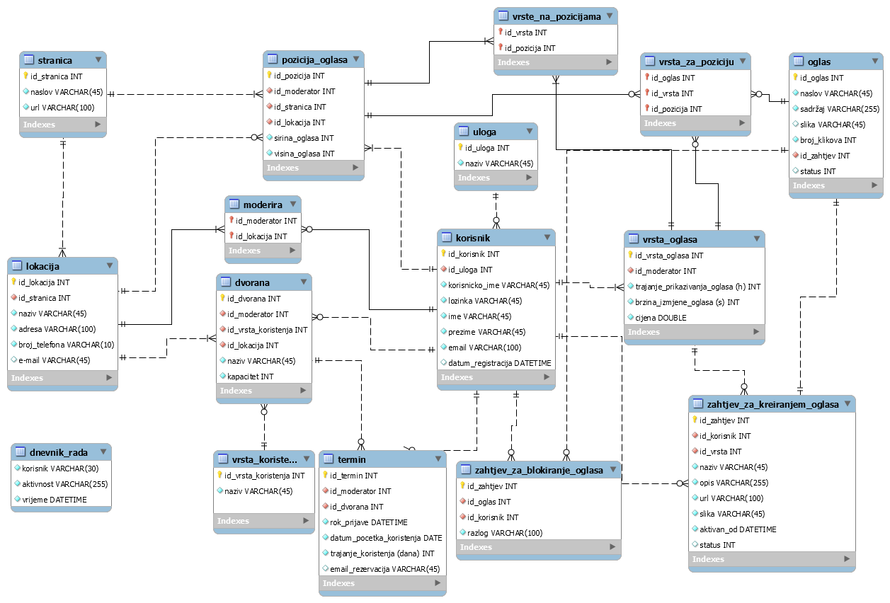
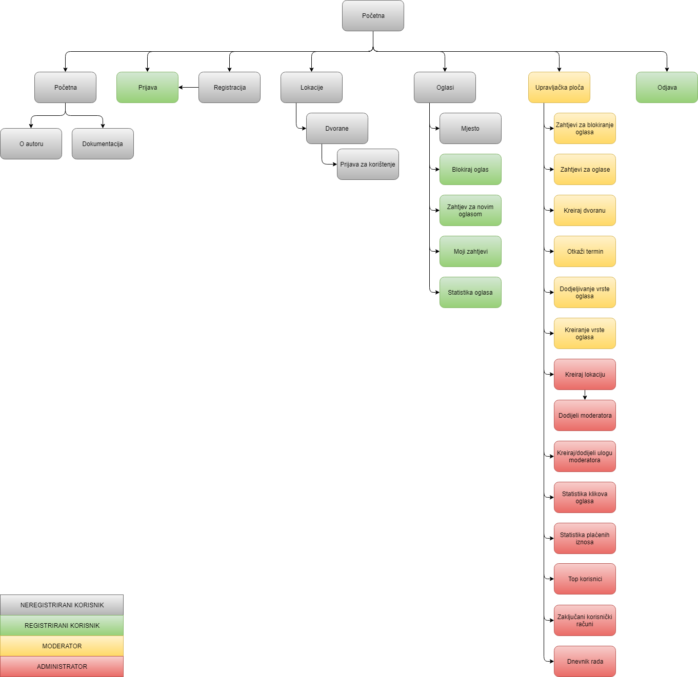

Zadatak ovog projekta bio je izraditi sustav koji omogućuje korisniku upravljanje poslovnog prostora. Korisnici koji koriste ovaj sustav imaju sljedeće uloge:
Neregistrirani korisnik može vidjeti popis lokacija, odabirom kojih može vidjeti popis dvorana na tim lokacijama te rezervirati dvoranu u željenom terminu ako je slobodan. Rezervacijom dvorane dobiva kod za ostavljanje povratne informacije. Također vidi aktivne oglase na stranici koji se izmjenjuju ovisno o definiranoj brzini izmjene za tu vrstu oglasa. Ako za neku poziciju nema oglasa, na tom dijelu se prikazuje informacija "Kupite oglas po cijeni X", gdje je X najniža cijena vrste oglasa na toj poziciji. Klikom na oglas, usmjeren je na definirano mjesto na webu, a kod svakog klika na oglas, bilo kojeg korisnika, povećava se broj klikova za taj oglas.
Registrirani korisnik također može vidjeti aktivne oglase te poslati zahtjev za blokiranjem oglasa uz navođenje razloga. Može pregledavati vrste oglasa i kreirati zahtjev za kreiranjem novog oglasa, prilikom čega je dužan odabrati vrstu oglasa te naziv, opis, url do stranice na webu koja se otvara klikom na oglas, postavlja sliku oglasa te određuje od kad je oglas aktivan te se na temelju duljine trajanja za odabranu vrstu izračunava do kada će se oglas prikazivati. Može vidjeti popis svojih zahtjeva za kreiranjem oglasa i njihov status te ih ažurirati ukoliko još nisu prihvaćeni ili pak odbijeni. Također vidi statistiku klikova za svoje oglase.
Moderator kreira dvorane i njihovu vrstu korištenja za lokacije kojima je dodjeljen od strane administratora. Vidi popis rezerviranih termina za dvorane te iste može otkazati, postavljajući novi termin, obavještavajući pri tom korisnika o otkazanom terminu i informacijom o novom terminu. Zatim, može odrediti vrste oglasa za poziciju za koju je zadužen od strane administratora. Također može i kreirati novu vrstu oglasa za svoju poziciju. Vidi popis zahtjeva za oglašavanjem oglasa i zahtjeva za blokiranjem oglasa na pozicijama za koje je zadužen te iste može prihvatiti ili odbiti. Ako je oglas blokiran, više se ne prikazuje.
Administrator može na sustavu raditi sve što i niže razine uz neke dodatne mogućnosti. Tako može kreirati lokacije i dodijeliti im moderatora. Zatim, može definirati pozicije prikaza oglasa navođenjem stranice, broja lokacije na stranici i dimenzije oglasa. Može naknadno mijenjati dimenzije. Prilikom kreiranja pozicije mora odabrati moderatora koji je za tu poziciju zadužen. Vidi različite statistike:
Projektno rješenje koristi bazu podataka koja sadrži sve entitete koji se koriste za upravljanje sustavom. Projektno rješenje izrađeno je kao skup PHP datoteka, dizajna oblikovanog koristeći CSS (Cascading Style Sheet). Za rad s bazom podataka većinom je korišten PHP te klasa za rad s bazom koja je u vlasništvu nositelja kolegija. Za neke potrebe rada s bazom podataka i ostvarivanje željene funkcionalnosti (kao što je izmjena oglasa, prikazivanje asocijativnih tablica, automatsko generiranje podataka u inpute iz tablice) korišteni su JavaScript/jQuery i AJAX.
Uloge koje imaju mogućnost upravljanja sustavom su moderator i administrator. Registrirani korisnik može biti promaknut u moderatora od strane administratora. Moderator i administrator, kao i registrirani korisnici, imaju u bazi podataka zapisana korisnička imena i lozinke kako bi se prijavili. Mogućnosti moderatora i administratora navedene su u opisu projektnog zadatka.
Scenarij korištenja uključuje dolazak neregistriranog korisnika na web stranicu projektnog rješenja. Prilikom takvog posjeta može vidjeti samo lokacije i dvorane te za odabranu dvoranu može rezervirati termin obaveznim navođenjem svoje e-mail adrese. Također može vidjeti oglase koji se objavljuju na stranici. Ukoliko želi ostvariti dodatne mogućnosti, može se registrirati. Prilikom registracije provjerava se nalazi li se u bazi uneseno korisničko ime ili e-mail adresa. Ukoliko se nalazi, sustav javlja korisniku da je jedno od navedenog, ili oboje, zauzeto te je korisnik dužan odabrati drugo korisničko ime, odnosno unijeti ispravnu ili drugu e-mail adresu. Također se i provjeravaju ostali atributi te ispravnost njihovog unosa, ovisno o tome kako je konfigurirano u sustavu. Nakon što je unio ispravne podatke i uspješno se registrirao, unesen je u bazu podataka, ali račun još nije aktivan. Na e-mail adresu koju je unio, dobiva aktivacijski link koji ga preusmjerava na PHP skriptu koja u bazi podataka ažurira (aktivira) korisnički račun. Korisnik je sada registriran te se može, shodno registracijskim podacima, prijaviti kako bi kreirao korisničku sesiju, ostvarujući time mogućnosti registriranog korisnika. Ukoliko je zaboravio lozinku, može kliknuti na gumb "Zaboravljena lozinka" te će na mail dobiti novu lozinku koja je skup nasumično generiranih znakova od strane sustava. Ukoliko se neuspješno prijavio 3 puta, korisnički račun će mu biti zamrznut te se neće više moći prijaviti sve dok mu administrator ne odmrzne korisnički račun. Nakon što se prijavio, ima mogućnost pregleda oglasa te predavanja zahtjeva za blokiranjem oglasa, pri čemu je dužan navesti razlog blokiranja oglasa. Također može predati zahtjev za objavljivanjem vlastit(og/ih) oglasa te pregledati svoje predane zahtjeve za kreiranjem oglasa, gdje vidi u kojem je stanju koji zahtjev (prihvaćen, odbijen ili na čekanju) i statistiku klikova za svoje oglase koji su aktivni.


Projektno rješenje se sastoji od sljedećih skripata i datoteka:
"Glavne datoteke":Navedene datoteke su glavne zato jer su one korijen web mjesta. Preko njih se mora ići kako bi se pristupilo svim ostalim datotekama koje se nalaze u projektnom rješenju. index.php je početna stranica. prijavaRegistracija.php sastoji se od obrazaca za prijavu postojećih korisnika i registraciju novih korisnika. lokacije.php prikazuje popis svih lokacija koje je kreirao moderator ili administrator. Klikom na neku lokaciju otvara se ista stranica, ali u drugom modu, gdje se može vidjeti popis slobodnih dvorana te rezervirati termini za iste. oglasi.php prikazuje aktivne oglase, a registriranom korisniku se prikazuje padajuća lista sa mogućnostima koje su navedene u opisu projektnog zadatka. Na index.php, lokacije.php stranicama također se prikazuju oglasi. upravljackaPloca.php prikazuje se samo moderatorima i administratoru te se na njoj nalaze sve ostvarene mogućnosti svake od tih dviju uloga.
Skripte:baza.class.php je skripta za upravljanje bazom podataka, a sesija.class.php je skripta koja je malo prilagođena za kreiranje i brisanje sesije te, u nekim slučajevima, dohvaćanje prijavljenog korisnika i njegove uloge, prema potrebi. dodijeliVrstuPoziciji.php, tablicaPlacenihIznosa.php, tablicaStatistikaKlikova.php, tablicaStatistikaOglasa.php, tablicaTopListaKorisnika.php, tablicaVrstaOglasa.php, tablicaZahtjevaZaBlokiranjeOglasa, vrstaZaPoziciju.php, vrstaZaPoziciju_lista.php, zahtjeviZaBlokiranjeOglasaStranicenje.php su skripte koje se koriste kako bi se AJAX-u dohvatili podaci iz baze podataka. captcha.php služi za generiranje koda za sprečavanje automata. oglasiWebMjesto.php je stranica koja se otvara prilikom klika na neki oglas i sadrži naslov oglasa, sadržaj i sliku oglasa te gumb za blokiranje oglasa. blokiranjeOglasa.php otvara se klikom na gumb za blokiranje oglasa i na toj stranici se unosi razlog blokiranja. predaniZahtjevi.php sadrži galeriju slika predanih zahtjeva za kreiranjem oglasa. statistikaOglasa.php prikazuje broj klikova za oglase u vlasništvu korisnika koji je prijavljen.
Mapa Privatno: Mapa css:npetanjek.css je skup uputa za dizajn web stranice, a npetanjek_prilagodbe.css je skup uputa za responzivni dizajn, ovisno o mediju (napravljene su prilagodbe za 480px i printer).
Mapa js:npetanjek_jquery.js sadrži upute za izmjenu aktivnih oglasa. npetanjek_jquery_upravljackaPloca.js sadrži funkcije za prikaz nekih tablica, funkcioniranje gumba, padajuće liste vrsta oglasa, autocomplete za inpute kod dodjeljivanja moderatora lokacijama i kreiranja novih lokacija te generiranje grafova u canvasu za statističke podatke.
Mapa slike sadrži slike oglasa koje korisnici prenose prilikom izrade zahtjeva za kreiranjem oglasa.
Za izradu projekta korišteni su sljedeći alati:
Ostvarene su gotovo sve funkcionalnosti koje su navedene u projektnom zadatku za pojedinu ulogu. Većina funkcionalnosti obavljena je korištenjem PHP-a, a u određenoj količini korišten je jQuery/AJAX. Prolazeći kroz obrazac za ocjenjivanje projekta, smatram da je većina traženih funkcionalnosti uspješno ostvarena.